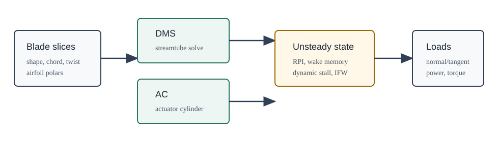

OWENSAero.jl
OWENSAero provides the aerodynamic models used by OWENS for vertical-axis wind and water turbines. It can also be used directly for single-slice studies, full stacked-slice turbine calculations, and OpenFAST InflowWind-driven turbulent inflow cases.

The package contains two primary VAWT aerodynamic paths:
| Path | Main use | Notes |
|---|---|---|
| Double-multiple-streamtube (DMS) | Fast design sweeps, optimization, and regression testing | Implemented in DMS and selected by Environment(..., AeroModel = "DMS", ...). |
| Actuator cylinder (AC) | Higher-fidelity steady slice loading and multi-turbine influence work | Implemented in AC and selected by AeroModel = "AC". |
Both paths share the Turbine, Environment, and UnsteadyParams data structures. The high-level turbine workflow in setupTurb, steadyTurb, and advanceTurb builds one or more vertical slices, stores model state, and returns distributed aerodynamic loads for coupling to OWENS structural dynamics.
Documentation Map
- Quickstart shows the smallest direct slice and full-turbine calls.
- Model Selection explains when to use DMS, AC, dynamic stall, RPI, and InflowWind.
- Full Turbine Workflow documents the stateful
setupTurb/steadyTurb/advanceTurbpath used by coupled OWENS runs. - Dynamic Stall documents the Boeing-Vertol test/example path.
- RM2 Example points to the standalone RM2 aerodynamic example.
- Frames, Units, and Outputs records load directions and expected SI units.
- Validation and Testing identifies the tests that currently pin model behavior and the remaining validation gaps.
- API Reference is the generated function and type index.